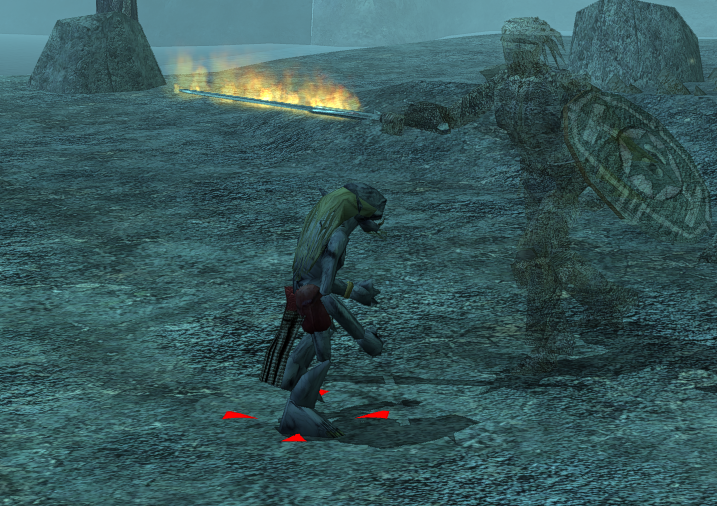
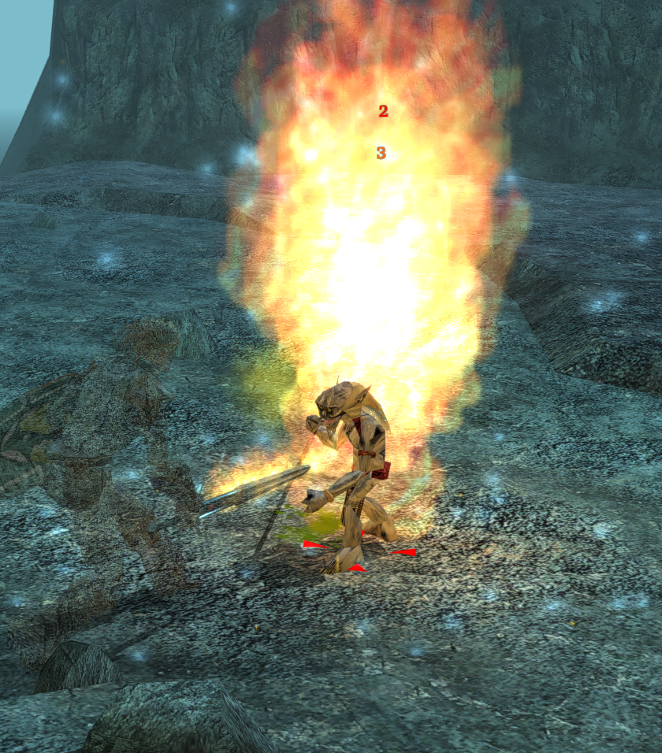

Gollum


★ Server First: first slain by Rand the Divine -Marauders- [y a z k i r] on 2026-06-17 15:51:40.
Kills
| Total | Solo | Party |
|---|---|---|
| 6 | 4 | 2 |
Top Killers
| # | Player | Character | Solo | Party | Total | Last Kill |
|---|---|---|---|---|---|---|
| 1 | ray | Dolir Fenk | 1 | 0 | 1 | 2026-07-11 |
| 2 | yazkir3.0 | H.R. Buff'n Stuff | 0 | 1 | 1 | 2026-06-17 |
| 3 | szescian82 | PiC The Finger of Death | 1 | 0 | 1 | 2026-07-24 |
| 4 | szescian82 | PiC Wizardrix | 1 | 0 | 1 | 2026-07-08 |
| 5 | y a z k i r | Rand the Divine -Marauders- | 0 | 1 | 1 | 2026-06-17 |
| 6 | Try_This | Rowdy | 1 | 0 | 1 | 2026-06-29 |
Where to find
Placed directly
| Area | Count |
|---|---|
| Gollum's Chambers | 1 |
Abilities
| Str | 90 | Dex | 30 | Con | 30 | Int | 30 | Wis | 30 | Cha | 20 |
|---|
Classes
| Class | Level |
|---|---|
| Humanoid | 60 |
| Assassin | 40 |
Combat
| HP | 8,270 | AC | 84 (10 base + +10 Dex + +32 natural (NaturalAC) + +20 dodge (items) + +4 dodge (haste) + +8 dodge (Tumble, 40 ranks)) | BAB | +15 |
|---|---|---|---|---|---|
| Fort | +10 | Ref | +10 | Will | +10 |
Saves shown = stored bonus + ability mod + item bonuses (Saving Throw Bonus: Specific); class-table progression and feat bonuses (Great Fortitude, etc.) are applied at runtime.
Equipment combat properties (combined)
| AC Bonus (Dodge, items) | +20 |
|---|---|
| Damage Resistance | Divine 10/-, Magical 5/-, Negative 50/-, Positive 10/- |
| Damage Immunity | Acid (90%), Bludgeoning (90%), Cold (50%), Electrical (50%), Fire (50%), Piercing (90%), Slashing (90%) |
| Misc Immunity | Critical Hits, Death Magic, Fear, Knockdown, Mind-Affecting Spells, Paralysis, Poison, Sneak Attack |
| Immunity: Spells | Bigby's Interposing Hand, Dominate Monster, Harm, Implosion |
| Misc Abilities | Haste (+4 dodge AC, factored into main AC), Freedom of Movement, True Seeing |
Dodge AC and save bonuses are factored into the main combat stats above. Dodge AC stacks (cap +20); haste adds +4 more (separate). All other same-type bonuses do not stack — only the highest is shown. Regeneration stacks without limit.
Weapons
| Slot | Item | Base | Type | Attack schedule | Damage | Crit |
|---|---|---|---|---|---|---|
| Creature weapon (R) | Gollums fist | cbludgweapon | Melee | +76/+71/+66 | — | 20/x2 |
| Creature weapon (L) | Gollums fist | cbludgweapon | Melee | +76/+71/+66 | — | 20/x2 |
Spells
Special abilities
| Spell/ability | Caster level | Uses |
|---|---|---|
| Psionic Mass Concussion | 0 | 5/day |
| Pulse, Ability Drain Charisma | 0 | 5/day |
| Pulse, Ability Drain Constitution | 0 | 5/day |
| Pulse, Ability Drain Dexterity | 0 | 5/day |
| Pulse, Ability Drain Intelligence | 0 | 5/day |
| Pulse, Ability Drain Strength | 0 | 5/day |
| Pulse, Ability Drain Wisdom | 0 | 5/day |
| Pulse, Air Elemental Whirlwind | 0 | 5/day |
| Pulse, Cold | 0 | 5/day |
| Pulse, Death | 0 | 5/day |
| Pulse, Disease | 0 | 5/day |
| Pulse, Fire | 0 | 5/day |
| Pulse, Holy | 0 | 5/day |
| Pulse, Level Drain | 0 | 5/day |
| Pulse, Lightning | 0 | 5/day |
| Pulse, Negative | 0 | 5/day |
| Touch, Petrification | 0 | 5/day |
Equipment
| Slot | Item | Lootable |
|---|---|---|
| Creature weapon (R) | Gollums fist | No |
| Creature weapon (L) | Gollums fist | No |
| Creature hide | Skin of gullom | No |
Inventory (19)
| Item | Item Type | Lootable | Pickpocketable |
|---|---|---|---|
| Gollum's Cloak | Cloaks | Yes | No |
| Gullom's Gloves | Bracers & Gauntlets | Yes | No |
| Greater Ring of Power | Rings | Yes | No |
| Ring of Force Shield | Rings | Yes | No |
| The One Ring | Rings | Yes | No |
| Belt of Agility +10 | Belts | Yes | No |
| Greater Archer’s Belt | Belts | Yes | No |
| Potion of Heal | Potions | Yes | No |
| Potion of Heal | Potions | Yes | Yes |
| Gold Piece | Miscellaneous | Yes | Yes |
| Gold Piece | Miscellaneous | Yes | Yes |
| Gold Piece | Miscellaneous | Yes | Yes |
| Gold Piece | Miscellaneous | Yes | Yes |
| Belt of Divine Might | Belts | Yes | No |
| Thieves' Tools +12 | Tools & Kits | Yes | No |
| Gollum's Hard Leather Skin | Cloth & Robes | Yes | No |
| Greater Ring of Fire Resistance | Rings | Yes | No |
| Greater Ring of Acid Resistance | Rings | Yes | No |
| Greater Scarab Protector | Amulets | Yes | No |
Feats (80)
- Alertness
- Bard_Song_02
- Bard_Song_03
- Bard_Song_04
- Bard_Song_12
- Bard_Song_13
- Bard_Song_14
- Bard_Song_15
- Cleave
- DamageReduction
- DamageReduction2
- darkvision
- DefensiveRoll
- DiamondBody
- DirtyFighting
- FE_Dragon
- FE_Dwarf
- FE_Elf
- FE_Gnome
- FE_HalfElf
- FE_Halfling
- FE_HalfOrc
- FE_Human
- fearless
- FEAT_BLINDSIGHT_60_FEET
- FEAT_CURSE_SONG
- FEAT_EPIC_ASSASSIN
- FEAT_EPIC_IMPROVED_SNEAK_ATTACK_10
- FEAT_EPIC_OVERWHELMING_CRITICAL_CREATURE
- FEAT_EPIC_PROWESS
- FEAT_EPIC_SELF_CONCEALMENT_10
- FEAT_EPIC_SELF_CONCEALMENT_20
- FEAT_EPIC_SELF_CONCEALMENT_30
- FEAT_EPIC_SELF_CONCEALMENT_40
- FEAT_EPIC_SELF_CONCEALMENT_50
- FEAT_EPIC_SUPERIOR_INITIATIVE
- FEAT_EPIC_WEAPON_FOCUS_CREATURE
- FEAT_EPIC_WEAPON_SPECIALIZATION_CREATURE
- FEAT_PRESTIGE_DEATH_ATTACK_1
- FEAT_PRESTIGE_DEATH_ATTACK_10
- FEAT_PRESTIGE_DEATH_ATTACK_11
- FEAT_PRESTIGE_DEATH_ATTACK_12
- FEAT_PRESTIGE_DEATH_ATTACK_13
- FEAT_PRESTIGE_DEATH_ATTACK_14
- FEAT_PRESTIGE_DEATH_ATTACK_15
- FEAT_PRESTIGE_DEATH_ATTACK_16
- FEAT_PRESTIGE_DEATH_ATTACK_17
- FEAT_PRESTIGE_DEATH_ATTACK_18
- FEAT_PRESTIGE_DEATH_ATTACK_19
- FEAT_PRESTIGE_DEATH_ATTACK_2
- FEAT_PRESTIGE_DEATH_ATTACK_20
- FEAT_PRESTIGE_DEATH_ATTACK_3
- FEAT_PRESTIGE_DEATH_ATTACK_4
- FEAT_PRESTIGE_DEATH_ATTACK_5
- FEAT_PRESTIGE_DEATH_ATTACK_6
- FEAT_PRESTIGE_DEATH_ATTACK_7
- FEAT_PRESTIGE_DEATH_ATTACK_8
- FEAT_PRESTIGE_DEATH_ATTACK_9
- FEAT_PRESTIGE_DEFENSIVE_AWARENESS_1
- FEAT_SUPERIOR_WEAPON_FOCUS
- FlurryofBlows
- ImpCritCreature
- ImpPower
- ImprovedEvasion
- Mobility
- Opportunist
- ResistDisease
- ResistEnergyAcid
- ResistEnergyCold
- ResistEnergyElectrical
- ResistEnergyFire
- SlipperMind
- Small
- SpringAttack
- Stealthy
- StillMind
- WeapFocCreature
- WeapProfCreature
- WeapSpecCreature
- WholenessofBody
Skills
| Skill | Ranks |
|---|---|
| Discipline | 60 |
| Hide | 60 |
| Listen | 40 |
| Parry | 63 |
| Perform | 99 |
| Search | 40 |
| Spot | 40 |
| Tumble | 40 |
Scripts
| Event | Script |
|---|---|
| ScriptHeartbeat | x2_def_heartbeat |
| ScriptOnNotice | x2_def_percept |
| ScriptEndRound | x2_def_endcombat |
| ScriptDialogue | x2_def_onconv |
| ScriptAttacked | x2_def_attacked |
| ScriptDamaged | x2_def_ondamage |
| ScriptDeath | x2_def_ondeath |
| ScriptDisturbed | x2_def_ondisturb |
| ScriptSpawn | x2_def_spawn |
| ScriptRested | x2_def_rested |
| ScriptSpellAt | x2_def_spellcast |
| ScriptUserDefine | x2_def_userdef |
| ScriptOnBlocked | x2_def_onblocked |